Uzungöl
Uzungöl’e İç Anadolu’dan yapılan yolculuk uzun ve yorucu.
Yolun tamamı asfalt ama Trabzon üzerinden gidilebiliyor.
Uzungöl’e ayrıca Bayburt üzerinden de gidilebiliyormuş, yolu denemedim ama minibüsler hep bu yolu kullanıyorlarmış.
Göl bölgesinde çok sayıda Arap Turist var, otellerin %90’ı Arap turistler ile dolu durumda. Bu durumun bir sonucu olarak tabelalar bile Arapça yazılır olmuş.
Göl kenarında çok fazla yapılaşma var, gölün doğallığı tamamen bozulmuş, tabii olarak gölde ciddi miktarda kirlenme de söz konusu.
Göl kenarında o kadar çok yapı var ki göle yaklaşamıyorsunuz bile.
Gölden ziyade yukarıdaki yaylalar daha güzel, şelaleler görülmeye değer.
Oteller nispeten ucuz ama konaklama olanakları çok iyi değil, odalar genel itibari ile çok küçük, geceleri çok sinek oluyor.
Bölgedeki yemekler de çok iyi değil.
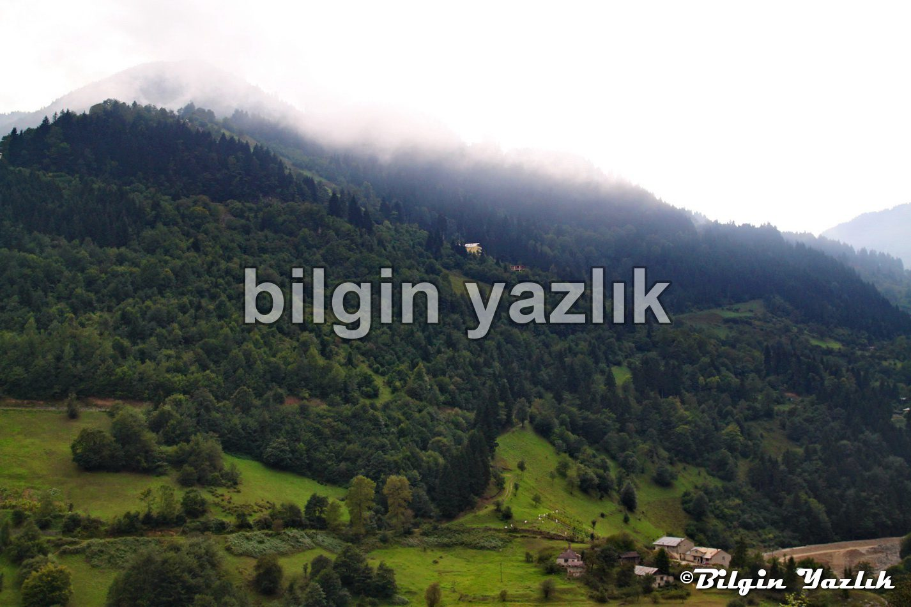
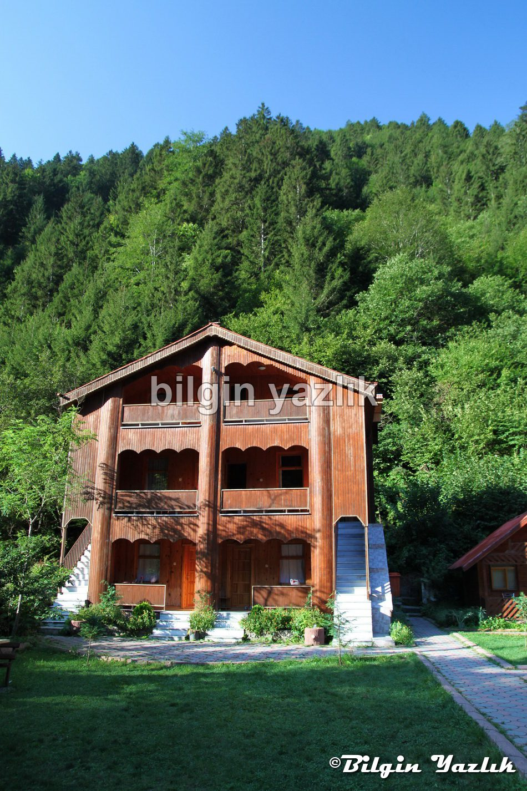
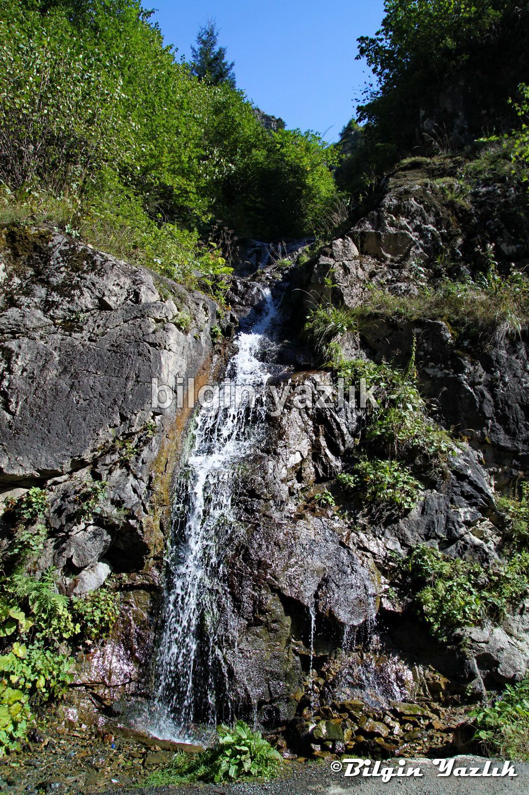
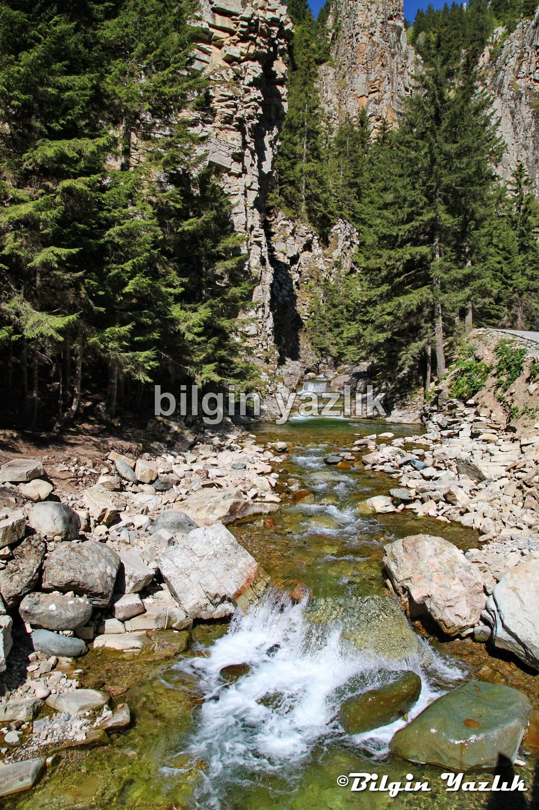
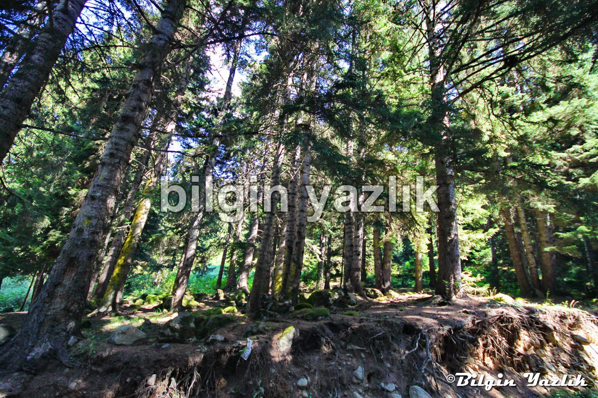
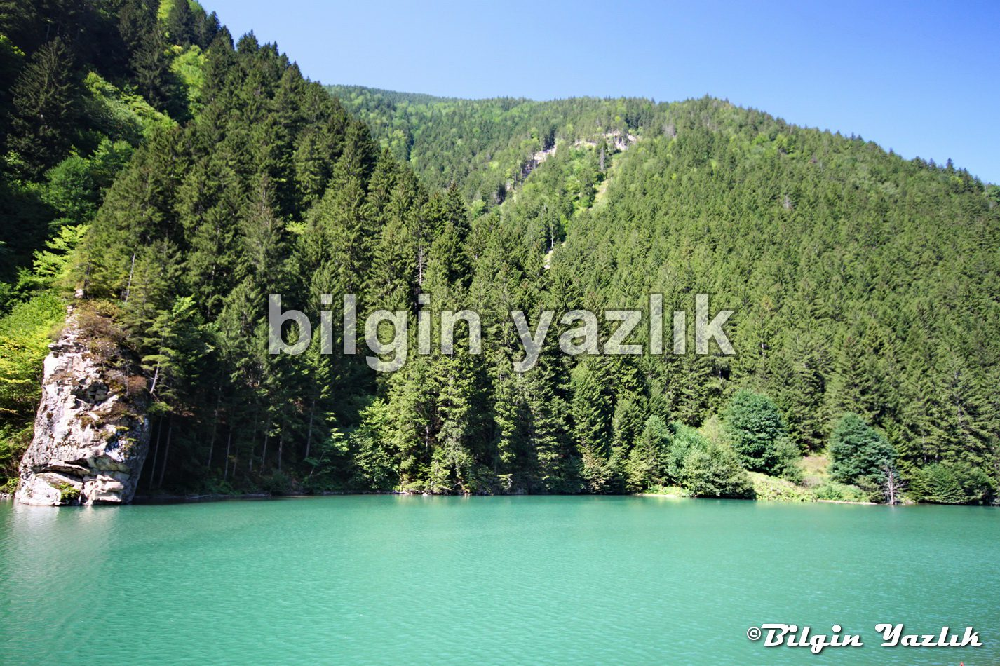
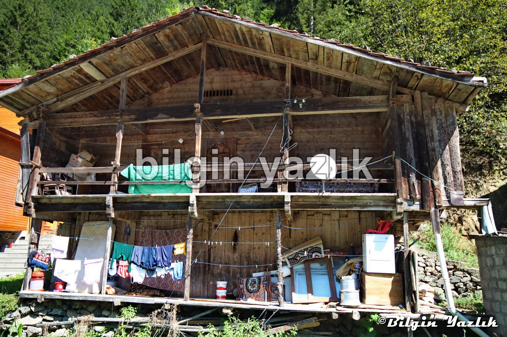
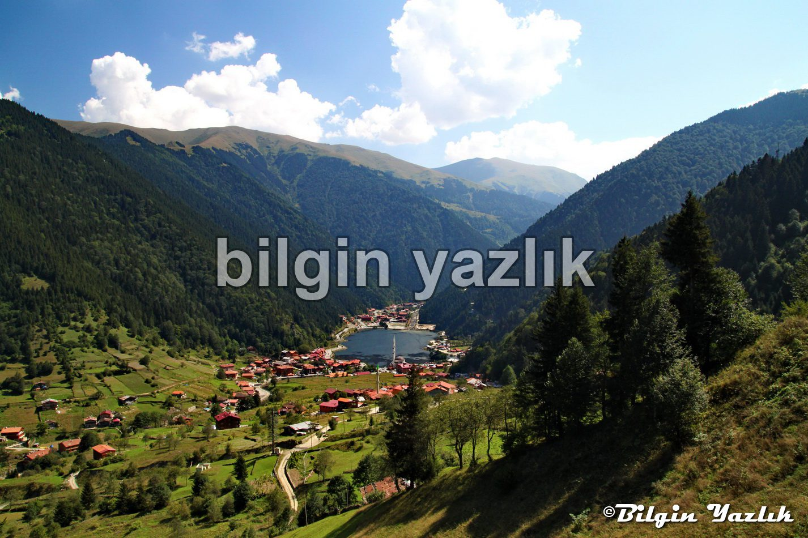
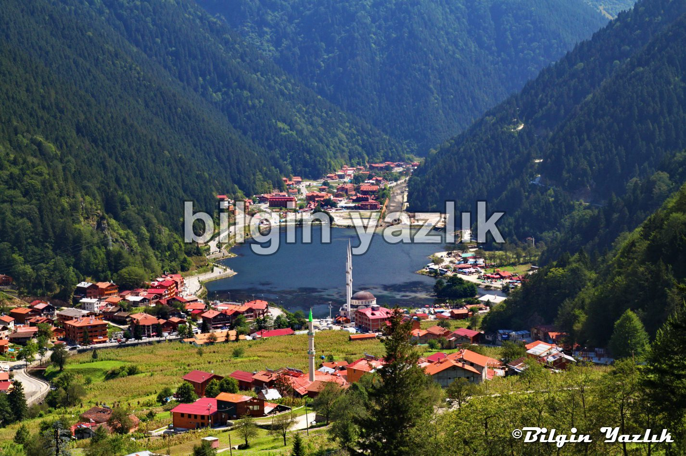
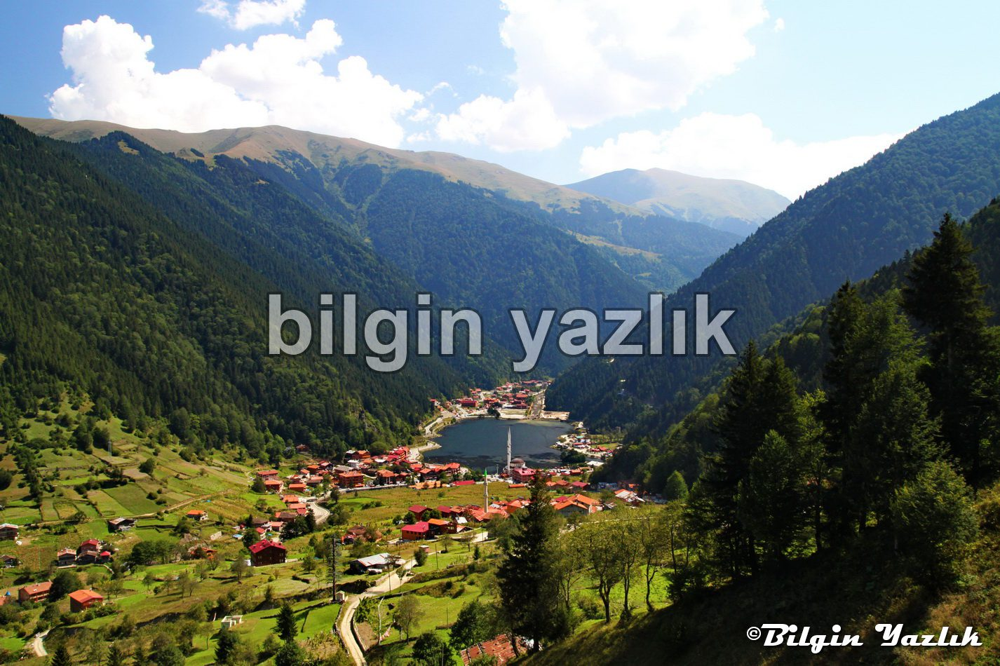
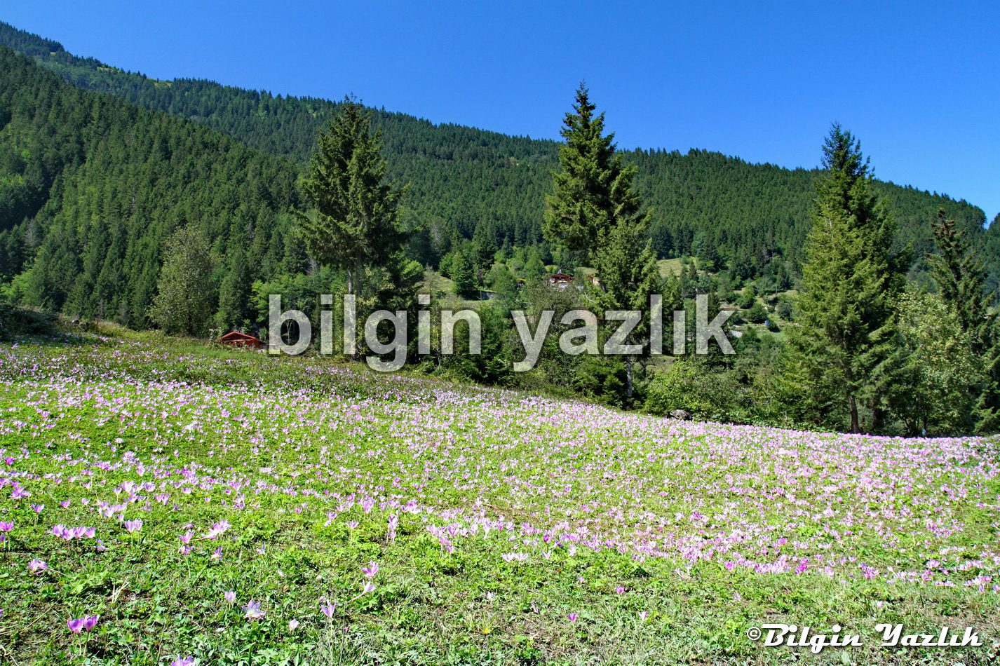
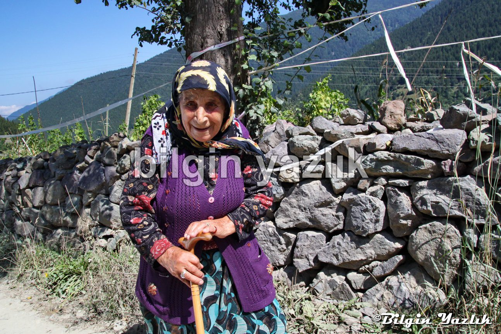
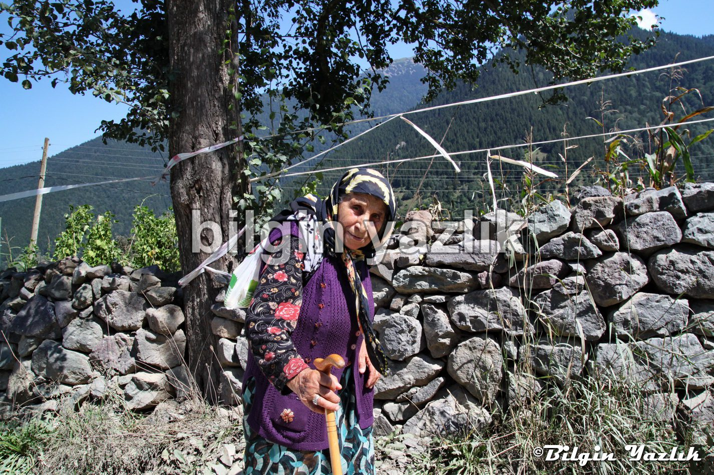
Bu yazı taliyol arşivinden taşınmıştır. · özgün kayıt